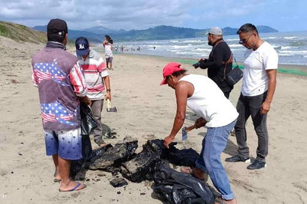

Línea de Sangre: El Agónico Frente del Voluntariado y Rescate
Cuando la negligencia corporativa tiñe el océano de negro, la última línea de defensa entre la vida y la muerte de miles de animales la construyen personas comunes. Las operaciones de rescate y voluntariado en un desastre por hidrocarburos no son tareas de limpieza idílicas; son un frente de batalla físico y emocionalmente devastador. Cientos de voluntarios se adentran en playas tóxicas, respirando vapores pesados, con el único objetivo de arrancar de las garras del alquitrán a criaturas exhaustas y aterrorizadas. Cada minuto cuenta: un ave impregnada de crudo pierde su impermeabilidad térmica y morirá congelada o ahogada en cuestión de horas si no es localizada e intervenida de inmediato.
El proceso de rehabilitación es una carrera contra el reloj que requiere una precisión quirúrgica para no matar al animal por estrés. En los centros de rescate improvisados, los ejemplares son primero estabilizados médicamente, hidratados con sondas para combatir la intoxicación interna y envueltos en mantas térmicas. Solo cuando sus constantes vitales lo permiten, se inicia el lavado manual: un procedimiento extenuante donde se utilizan detergentes industriales específicos y agua a temperaturas controladas. Lavar a un solo pelícano o a una nutria marina puede tomar más de una hora y requerir hasta doscientos litros de agua, frotando pluma por pluma, fibra por fibra, para eliminar el veneno pegajoso de sus ojos, picos y piel.